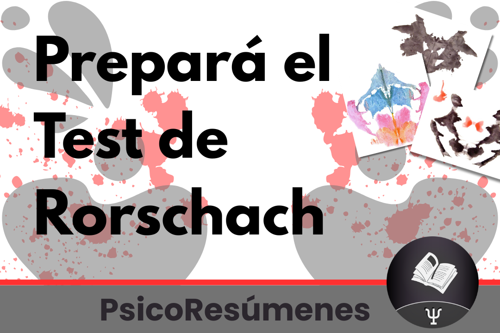

Resúmenes de Herramientas
|
Índice
Preguntas orientadoras del texto
Las categorías territorio, ámbito y campoLas categorías territorio, ámbito y campo están vinculadas a posturas epistémicas. Tienen que ver con las posibilidades de conocer y comprender lo que hay, en la delimitación de un recorte de realidad puesto a consideración, que el sujeto que asume tal encargo despliega. En otras palabras, tiene que ver con la naturaleza de la relación entre quien pretende conocer y comprender y aquello que tiene por destino ser comprendido y conocido. Estas 3 nociones no existen como categorías puras, sino que todo lo contrario, se hallan en constante interpenetración y movimiento, a veces territorio, a veces ámbito, a veces campo. Estas categorías en definitiva mantienen una relación de interconexión, continuidades y discontinuidades. Territorio Según las definiciones de la RAE, la palabra “territorio” sugiere una suerte de soberanía y delimitación precisa de una cierta porción de realidad que está sujeta a formaciones instituidas de gobierno que la rigen y administran, y que por tanto reivindican la autonomía e independencia de acción sobre ella. Metáfora que nos sitúa en la perspectiva de pensar las disciplinas invariablemente ligadas al territorio, ejerciendo poder, soberanía, dominación y exclusión de todo aquello que le es ajeno. Esta noción es tributaria a una concepción epistemológica positivista propia de la modernidad, la que erige a las disciplinas como organizadoras del conocimiento, y en términos globales de una cosmovisión del mundo regida por la primacía de la razón y el progreso permanente y lineal. Es en este sentido donde advertimos que todo acto de conocimiento que contempla un objeto a conocer y un sujeto cognoscente se concibe en compartimentos estancos, fragmentados, separados. La modernidad pone el énfasis en la razón como valor último, desplazando en este sistema de conocimiento a la emoción del sujeto cognoscente. La emoción en este universo se percibe como interferencia u obstáculo, por lo tanto en este momento la implicación queda colocada en el lugar de lo impensado. Entendiendo por aquella al conjunto de relaciones conscientes e inconscientes que los actores mantienen con los sistemas institucionales donde despliegan el acto cognoscitivo. Queda entonces excluida la posibilidad de que el sujeto se interpele por las circunstancias involucradas en la acción particular de conocer, lo que estaría obturando la capacidad del pensar en relación a lo que se hace, así como en relación al saber como se piensa en ese hacer. El sujeto que conoce se ubica separado del objeto de estudio. Objeto formal y abstracto que es medible, reproducible, cuantificable, autónomo, no contradictorio y univoco y que se halla desligado de un sujeto cognoscente, que a su vez tiene las características de ser a-histórico, aséptico, trascendente y que en su interpretación de la realidad buscará verdades últimas regidas por la obtención de una pretendida objetividad. Clara primacía de la lógica de lo uno e imposibilidad de considerar lo múltiple que conllevaría la inclusión en el acto cognitivo de aproximaciones a otros campos disciplinarios. Es un modo de pensar y operar que no supera los reduccionismos que son propios a las lógicas de objeto discreto que se delimitaron en los momentos fundacionales de las ciencias humanas y que territorializaron tales saberes en disciplinas académico-profesionales. Se busca entonces generar visibilidad y comprensión a la vez que construir estrategias de intervención desde un territorio disciplinario y disciplinante. La teoría y la técnica despliegan en este sentido su mayor violencia simbólica, ya que diagraman cual “lente” se antepone a la mirada del técnico para indicarle y construirle el objeto de estudio que tiene ante sí. Violencia simbólica que consiste en poner formas reconocidas como convenientes y legítimas, produciendo efectos territorializántes que no se presentan como tales al percibirse como universales. Foucault diría que una de las razones de la eficacia del ejercicio de poder es que oculta parte de sus propios mecanismos; en este sentido, la violencia simbólica nunca se presentaría como tal y sus axiomas y dogmas no se cuestionarían sino que serían atribuidos al orden de las cosas, a lo natural. Lo que el técnico busca, entonces, es el reconocimiento de ese universo teórico antes que cualquier eventualidad de un conocimiento nuevo, impredecible, que sorprenda. Estamos ante el gobierno de las técnicas (tecnocracia), y estas pasan a ser instrumentos cristalizados, arrancados de las realidades que les dieron vida y considerados con un valor “en sí” de carácter universal. Se considera que para la utilización de dichas técnicas en otros territorios sólo es cuestión de trasladarlas sin necesidad de grandes modificaciones. El dualismo teoría-práctica ostenta su mayor cristalización, ubicados en este registro epistémico podemos pensar que el nivel de articulación se da a partir de la noción de praxis. Entendida esta como la puesta en juego de una intervención sobre un recorte de realidad desde un referente teórico y que en el encuentro con el referente empírico, produce un efecto de retorno sobre la teoría en donde esta se ratifica o rectifica. Ámbitola noción de ámbito es una categoría que aunque por momentos remite al disciplinamiento propio del territorio, por otros tiene la capacidad de abrir el abanico a nuevas prácticas que muestran atisbos rupturistas. Estos involucran una ampliación de los lugares de intervención, al tiempo que promueven el desarrollo de nuevos modelos conceptuales, por ello, lo entendemos como una categoría bisagra, entre la noción de territorio y la noción de campo. La noción de ámbito es planteada por Bleger por los años 60 en su publicación “Psicohigiene y psicología institucional”, en donde a veces aparece referida a un lugar físico y otras como modelo conceptual. El autor por momentos refiere al ámbito como lugar de trabajo entendido empíricamente (individuos, grupos, instituciones y comunidades) y es ahí cuando se la encuentra más cercana a la noción de territorio. De todas formas, él intenta hacer un movimiento para salirse de esta restricción al establecer en un esquema la siguiente distinción: Conviene aclarar que no son sinónimos y que, por lo tanto, no coinciden psicología individual y ámbito psicosocial, tanto como tampoco coinciden psicología social con ámbito psicodinámico; la diferencia entre psicología individual y social no reside en el ámbito particular que abarcan una y otra, sino en el modelo conceptual que utiliza cada una de ellas; así, se puede estudiar la psicología de grupos (ámbito psicodinámico) con un modelo individual, tanto como se puede estudiar al individuo (ámbito psicosocial) con un modelo de la psicóloga social. Es justamente en este sentido que nos permite pensar que la psicología social no se encuentra definida ni por el número de personas con las que se trabaja, ni por el lugar donde se trabaja, sino por el enfoque con el que se trabaja. Por ello entendemos que la mayor potencia del término ámbito se encuentra cuando la referencia al mismo es en términos de modelo conceptual, donde el ámbito “...comprende la extensión o amplitud particular en que los fenómenos son abarcados para su estudio o para la actividad profesional”. Es decir, por ejemplo, que el ámbito psicosocial si bien se asocia a los individuos, no es únicamente dirigido a individuos. El autor en cierta medida problematiza el curso del desarrollo histórico que han seguido los modelos psicológicos hegemónicos, y plantea que el desarrollo de la psicología ha seguido el curso del sentido A del siguiente esquema, dirección que ha coincidido en cierta medida con una extensión de los modelos de la psicología individual a todos los otros ámbitos, y que es claramente insuficiente para manifestarse sobre las peculiaridades que en estas tienen lugar. El sentido A estaría mostrando que los ámbitos en términos de modelos conceptuales, yendo del individuo al grupo, a la institución y a la comunidad, generan un efecto de territorialización con la consecuente violencia simbólica. El aporte de Bleger lo ubica en el terreno de la innovación, ya que plantea la apertura a la movilidad y al uso de modelos conceptuales que provienen de diversos ámbitos. El autor dirá que “...a medida que vamos abarcando en la práctica nuevos ámbitos y se estructuran nuevos modelos conceptuales adecuados, se impone el sentido B”. Esta concepcion (sentido B) nos permite por ejemplo al trabajar en clínica con un sujeto (individuo), poder pensar los distintos planos que lo componen así como las diversas dimensiones que se hallan “jugadas” en esa singularidad; donde el mismo está incluido en distintos grupos, su familia, una determinada comunidad, al tiempo que es subjetivado por múltiples instituciones. También nos habilita en la utilización de una herramienta, como por ejemplo el mapa de red, surgido para intervenir en determinado ámbito como lugar empírico (comunidad), para trabajar en otro como puede ser la clínica individual, donde se lo estaría utilizando para abordar y comprender las redes sociales de un paciente determinado. Vemos claramente como Bleger propone una inflexión respecto al modelo conceptual predominante, que estaba centrado en las disciplinas, con alto nivel de especificidad y bien delimitadas unas de otras. En dicho modelo al individuo debía abordárselo con teoría y técnica de alguna rama de la psicología individual, igualmente con un grupo, al que debía tratarse con teoría y técnica de grupos, y por supuesto, siempre manteniendo la relación entre el recorte espacial y la teoría y la técnica que para dicho ámbito se había gestado. CampoLo que nos sugiere la noción de campo antes que nada, es que no estamos ante un objeto discreto con las cualidades que les son propias y que se constituyeron como tales en el encuentro con una forma de posicionamiento epistémico del sujeto cognoscente. Sino que esta noción rescata lo diverso como aquello que agrupa lo discontinuo, sin cultivar lo homogéneo, y nos ubica en una concepción epistemológica de la complejidad, esto último implica una nueva manera de pensarnos a nosotros mismos, la ciencia que producimos y el mundo que construimos gracias a nuestras teorías y nuestra capacidad creativa. Esta noción amplía las posibilidades respecto a lo que se investiga, pudiendo pensar ahora si desde la lógica de la paradoja y de lo discontinuo, dejando atrás un pensamiento lineal causa-efecto. Este movimiento de descentramiento estaría implicando posicionarse desde una epistemología que contemple lo transdisciplinario, lo que posibilitaría generar mayor visibilidad ya que se minimizarían ciertos puntos ciegos, entendiendo por éstos un cierto campo de visión epistémico que no es advertido, fenómeno que también involucra el no darse cuenta que no se ve, es decir, una “ceguera de segundo orden”. Es decir, nos permite percibir los impensados de una teoría, o sea, aquellas invisibilidades producidas a partir de sus condiciones de posibilidad de enunciación. Nos permite plantear la relación de indeterminación en las díadas de términos, ya no individuo-sociedad sino, individuo:sociedad. La relación es de incertidumbre, lo cual nos remite a un camino de investigación. Hablamos de procesos a elaborar, porque la relación no está marcada y no sabemos bien cual es la relación. De esta manera las fronteras que unen separando o separan uniendo se vuelven difusas, porosas, de límites inexistentes o imprecisos, lo que nos habilita a pensar en términos de conexiones y acoples. Condición de posibilidad para pensar en términos de multiplicidad, lo que lleva implícito el trabajo en el entre, en él “y”, donde se establecen entre los elementos la síntesis conectiva que es lo inmanente mismo del encuentro. La figura que se ubicaría en el lugar del sujeto cognoscente, no es la del técnico, sino la del investigador, ya que no hay técnicas que aplicar. El término de campo permite intervenir y pensar en relación a un corte de realidad donde ya no existe un sujeto cognoscente escindido de un objeto de conocimiento. Al primero lo concebimos desterritorializándose para advenir constructor de un campo de conocimientos, al tiempo que al segundo, campo de problemáticas a formular. Ninguno posee existencia propia en tanto se conforman como tales en el encuentro, y es por ello que les corresponde ser pensados en términos de inmanencia. El proceso de conocimiento es un espacio abierto, interconectado y susceptible de adaptación y modificación en conexión con una realidad que es antes que nada contextual. El trabajo en campos de problemas y no de objeto unidisciplinario implica considerar que pensar problemáticamente es trabajar ya no desde sistemas teóricos que operen como ejes centrales sino pensar puntos relevantes, que operen permanentemente descentramientos y conexiones no esperadas; el problema no es una pregunta a resolver sino que los problemas persisten e insisten como singularidades que se despliegan en el campo. En términos de campo no hay lugar para lo teórico por un lado y lo práctico por otro como categorías disociadas, ya no teoría-práctica, sino relaciones de indeterminación, es decir, teoría:práctica. La práctica es un conjunto de conexiones de un punto teórico con otro, y la teoría un empalme de una práctica con otra. Es en esto en lo que una teoría no expresa, no traduce, no aplica una práctica; sino que es una práctica. Desde este posicionamiento no se piensa ni opera desde un marco teórico que estaría signado por la lógica de lo uno y sumido en criterios de verdad adhiriendo a relatos totalizadores y totalizantes. Se trata de construir instrumentos para pensar campos de problemáticas, donde la constitución del campo de conocimientos desde donde intervenir se va construyendo atendiendo a lo específico, lo local y puntual, y donde no tienen cabida cristalizaciones teórico-técnicas con criterio de universalidad. Caja de herramientasUna teoría es exactamente como una caja de herramientas. Es preciso que sirva, que funcione. Y no para uno mismo. Si no hay personas para utilizarla, comenzando por el teórico mismo, que deja entonces de ser teórico, es que no vale nada, o que el momento no llegó aún. La tarea propositiva entonces apunta al desdisciplinamiento de los cuerpos disciplinarios, cuestión que implica incurrir en procedimientos complejos por cierto y que están encaminados hacía una elucidación crítica, la que podríamos descomponer en 3 grandes líneas:
Es importante tener en cuenta, que donde se construye un campo de problemáticas siempre existe también algún indicio de territorialización y a la inversa. Respecto a la primera derivación, siempre en el campo aparece un efecto de teoría, es decir, surgen micro-instancias donde lo procesual queda capturado bajo la égida del territorio. En cuanto a la segunda, siempre en un efecto de territorialización se materializan líneas que desatienden la captura, son desvíos que trascienden los dominios de ese territorio y que podrían, si el técnico cede, ingresar en un proceso de desterritorialización. Situación que solo es posible si se contempla al desvío y se da cabida a lo novedoso que insiste y no puede ser comprendido desde un referente teórico disciplinario dado. Bibliografía utilizada
|

Tutorías particulares Tutorías por Zoom, tutorías grabadas y clases de consulta sobre varias materias de facultad. Consulta por más información al celular 098 053 967 ¡Leé más acá! 
Herramientas de la Psicología Social Preparación particular o grupal del examen, parciales, acompañamiento del curso o de temas especificos. Más información 
Herramientas de la Psicología Clínica Preparación particular o grupal del examen, parciales, acompañamiento del curso o de pruebas psicológicas específicas. Más información  Test de Rorschach Preparación particular o grupal del Test de Rorschach. Para rendir el examen o el parcial de Herramientas de la Psicología Clínica. Más información 
Articulación de saberes V Preparación particular o grupal del primer parcial. Tutorías de autores específicos como Alvaro, Torres, Salazar, Fernandez y Guattari. Mentorías para realizar el segundo parcial grupal. Más información 
Modalidades de exámenes Enterate de las características de todos los exámenes de la carrera. ¿Qué modalidad es? ¿Cuántas preguntas son? ¡Lee más acá! 
Certificados médicos ¿Qué hago si me enfermo el día del examen? ¿Cómo tramito el certificado médico? ¿Que me posibilita presentar un certificado médico? ¡Leé más acá! |